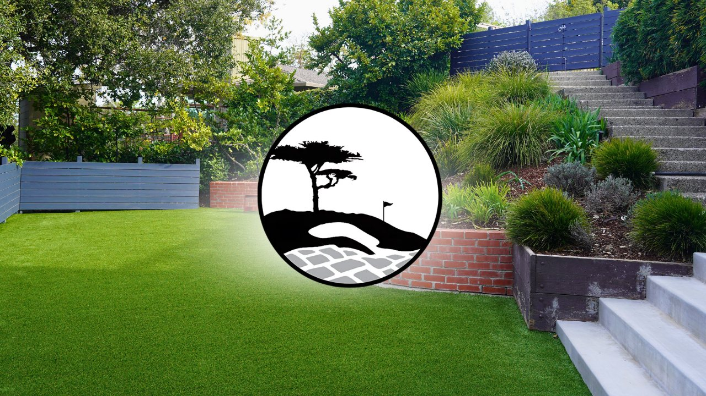
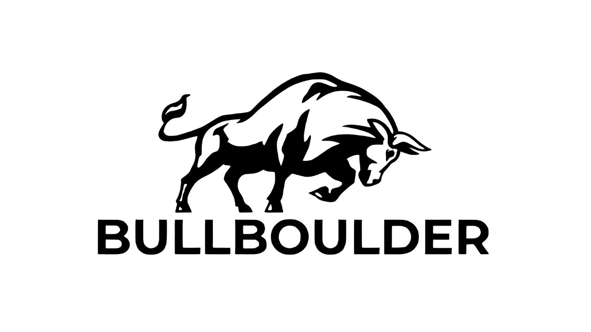
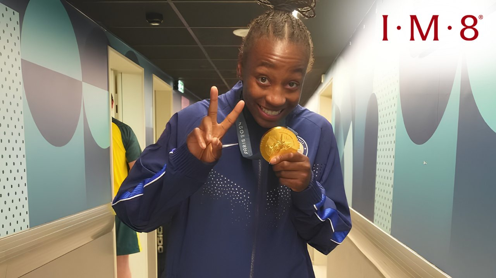

-

Paid Media · Local Contractor Creating a New Lead Channel for a Local ContractorCreative refreshes lowered lead costs and increased volume, one ad drove 350 leads at $7.46 each as CPA fell and stabilized.
Read case study → -

Creative Testing · Meta Creative Testing That Beat Bull Boulder's Meta BenchmarksA 6-video refresh built from repurposed content and my own new angles produced 2 winners out of 6, in an industry where a true "win" is supposedly closer to 1 in 15.
Read case study → -

Branded Content · Athlete Partnership Making Athlete Partnerships Feel Entertaining, Not ForcedBrand-friendly social content with Jewell Loyd (1.3M followers) for IM8, native to the feed, polished, and on-message without feeling like a forced endorsement.
Read case study →